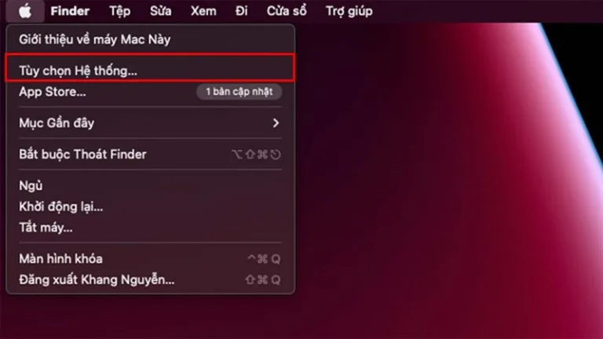
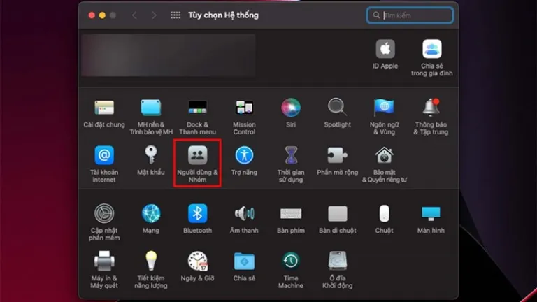
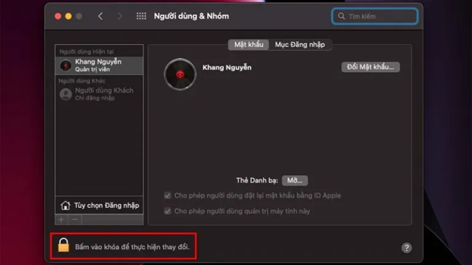
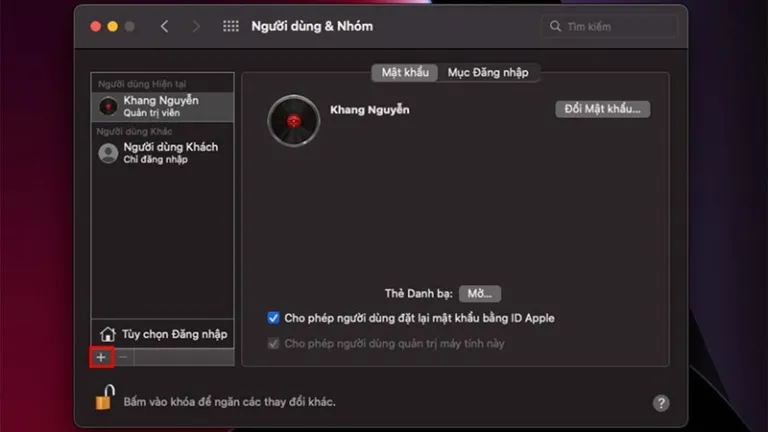
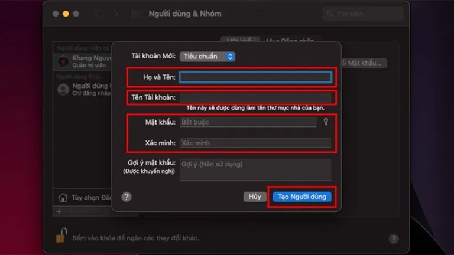

5 bước đơn giản để thêm tài khoản trên MacBook
Bạn muốn thêm tài khoản trên MacBook để ngoài bạn thì người thân của mình có thể truy cập sử dụng máy nhưng không biết làm thế nào? Đừng lo trong bài viết ngày hôm nay ShopDunk sẽ mách bạn các bước thực hiện cực kỳ đơn giản. Cùng theo dõi nhé!
Hướng dẫn thêm tài khoản trên MacBook
Bước 1: Bạn truy cập vào mục Tùy chọn Hệ thống ở biểu tượng quả Táo ở phía trên bên trái.
Truy cập vào mục Tuỳ chọn hệ thống
Bước 2:Tiếp theo bạn chọn tiếp vào Người dùng & nhóm.
Chọn tiếp vào Người dùng & nhóm
Bước 3: Ở cửa sổ hiện ra, bạn chọn tiếp vào mục biểu tượng ổ khoá và nhập mật khẩu để có thể thay đổi Cài đặt.
Nhập mật khẩu để có thể thay đổi Cài đặt.
Bước 4: Sau đó bạn chọn dấu cộng để thêm tài khoản.
Chọn dấu cộng để thêm tài khoản.
Bước 5: Bạn ghi đầy đủ họ và tên, tên tài khoản, mật khẩu và xác nhận để tạo tạo thêm tài khoản trên máy.
Xác nhận để tạo tạo thêm tài khoản trên máy.
Sau khi thiết lập xong các bước thêm tài khoản trên MacBook thì giờ đây bạn bè của bạn đã có thể đăng nhập vào tài khoản khác mà không hề ảnh hưởng đến dữ liệu mà bạn đang sử dụng.
- Apple phát hành iOS 15.5 RC sửa lỗi và cải thiện hiệu suất
- Tại sao học sinh, sinh viên nên mua iPad gen 9 để sử dụng?
Xem thêm:
Như vậy, chỉ bằng 5 bước đơn giản là bạn đã có thể tự mình thêm tài khoản trên MacBook từ đó những người dùng được thêm sẽ có quyền truy cập máy bạn. Tuy nhiên, đối với dữ liệu mang tính cá nhân bạn nên đặt mã khóa để tránh trường hợp đánh cắp thông tin. Chúc bạn thành công và đừng quên chia sẻ bài viết nếu thấy hay nhé.